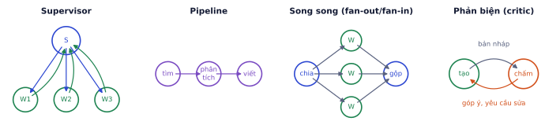
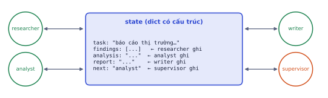
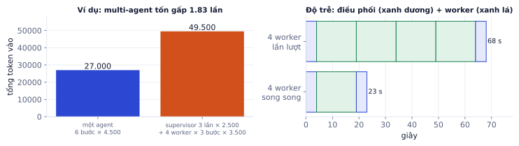

Khi một agent phải ôm quá nhiều tool, quá nhiều loại việc và một context quá dài, nó bắt đầu chọn nhầm và quên mục tiêu. Multi-agent chia việc cho nhiều agent chuyên môn hóa phối hợp với nhau. Nhưng nhiều agent cũng đồng nghĩa nhiều chi phí, nhiều độ trễ và nhiều chỗ để hỏng. Bài này dạy các mẫu kiến trúc, cách chuyển giao và chia sẻ trạng thái, cách cài bằng LangGraph, và quan trọng nhất là khi nào không nên dùng multi-agent.
Khi nào cần nhiều agent
Vì sao cần học
Multi-agent đang là chủ đề nóng, và rất dễ bị cuốn vào việc dựng một "đội agent" cho bài toán mà một agent tốt đã làm được. Câu hỏi đúng không phải "làm sao dựng multi-agent" mà là "bài toán này có thật sự cần không".
Bắt đầu với một agent. Chỉ tách ra khi có lý do đo được:
Dấu hiệu
Vì sao multi-agent giúp
Quá nhiều tool (trên 10–15), agent hay chọn nhầm
mỗi agent chỉ thấy vài tool của mảng mình
Các việc con cần prompt, model hoặc quyền khác nhau
agent viết code khác agent duyệt chi tiêu; việc dễ dùng model rẻ
Việc con độc lập, chạy song song được
nghiên cứu 5 đối thủ cùng lúc: nhanh hơn gần 5 lần
Context quá dài
mỗi agent con giữ context riêng, chỉ trả về bản tóm tắt
Cần kiểm tra chéo
một agent làm, agent khác (prompt khác, có khi model khác) chấm
Nếu không có dấu hiệu nào, multi-agent chỉ làm hệ thống đắt hơn, chậm hơn và khó debug hơn.
Ví dụ từng bước
Cần multi-agent: "Viết báo cáo so sánh 5 đối thủ cạnh tranh của shop". Năm phần nghiên cứu độc lập (song song được), mỗi phần cần đọc nhiều trang web (context dài), phần viết cần context sạch chỉ chứa kết quả đã tóm tắt.
Không cần: "Chatbot hỗ trợ khách: tra đơn, tra chính sách, tạo yêu cầu đổi trả". Ba tool, việc tuần tự, context ngắn. Một agent với 3 tool rõ ràng (P4.4) làm tốt hơn một supervisor điều phối ba agent con.
Các mẫu kiến trúc
Vì sao cần học
Hầu hết hệ multi-agent thực tế là một trong vài mẫu cơ bản hoặc tổ hợp của chúng. Biết các mẫu giúp bạn chọn kiến trúc đơn giản nhất đủ dùng.

Bốn mẫu hay gặp. Supervisor và song song phổ biến nhất trong production vì dễ kiểm soát.
Mẫu
Cách hoạt động
Ưu
Nhược
Supervisor (orchestrator–worker)
một agent điều phối nhận yêu cầu, chia việc, giao cho worker, tổng hợp
dễ kiểm soát, dễ log
supervisor là điểm nghẽn
Pipeline
agent nối tiếp, đầu ra của agent này là đầu vào agent sau
đơn giản, dễ hiểu
lỗi ở đầu lan tới cuối
Song song (fan-out / fan-in)
chạy nhiều worker cùng lúc trên các phần độc lập rồi gộp
giảm độ trễ mạnh
chỉ khi việc tách được
Phản biện (critic)
một agent tạo, một agent khác chấm và yêu cầu sửa, lặp vài vòng
tăng chất lượng
tốn gấp đôi trở lên
Ngang hàng (swarm)
agent tự chuyển giao cho nhau, không có trung tâm
linh hoạt
khó đoán, khó debug
Chuyển giao và trạng thái chung
Vì sao cần học
Phần lớn lỗi của hệ multi-agent nằm ở chỗ nối: worker không nhận đủ bối cảnh nên làm sai việc, hoặc trả về quá nhiều làm context của supervisor phình to. Thiết kế cách các agent trao đổi quan trọng hơn chọn framework.
Trạng thái có cấu trúc
Thay vì chuyền nhau đoạn hội thoại dài, dùng một state dạng dict với các trường rõ ràng. Mỗi agent đọc phần cần và ghi phần của mình.

Các agent không nói chuyện trực tiếp mà đọc và ghi vào một state chung; supervisor đọc state để quyết định bước tiếp theo.
Handoff rõ ràng
Khi agent A giao cho B, truyền đủ ba thứ:
Mục tiêu cụ thể: "Tìm giá bán, chính sách giao hàng và đánh giá trung bình của đối thủ X", không phải "nghiên cứu đối thủ X".
Bối cảnh tối thiểu: thông tin B cần mà B không tự biết (sản phẩm của ta là gì, đã biết gì rồi).
Định dạng kết quả: "Trả về JSON với các trường gia_ban, giao_hang, danh_gia, nguon".
Ví dụ từng bước
Handoff tệ: "Nghiên cứu Nội thất Hòa Bình."
Handoff tốt:
Mục tiêu: thu thập thông tin để so sánh Nội thất Hòa Bình với shop của ta về bàn trang điểm.
Cần tìm: giá 3 mẫu bàn trang điểm bán chạy nhất, phí và thời gian giao hàng ở Hà Nội,
chính sách đổi trả, điểm đánh giá trung bình.
Không cần: lịch sử công ty, sản phẩm khác.
Trả về JSON: {"gia": [...], "giao_hang": "...", "doi_tra": "...", "danh_gia": số, "nguon": [url]}
Giới hạn: tối đa 8 lần tìm kiếm.
Kết quả tóm tắt
Worker trả về bản tóm tắt gọn chứ không trả toàn bộ quá trình (các trang đã đọc, các lần tìm thất bại). Đây là lợi ích lớn nhất của multi-agent: worker có thể dùng 50.000 token context để làm việc, nhưng chỉ đưa 500 token kết quả cho supervisor.
A2A: agent của các hệ thống khác nhau
A2A (Agent2Agent) là giao thức mở để agent của các hệ thống, các công ty khác nhau làm việc với nhau qua HTTP: mỗi agent công bố một "agent card" mô tả khả năng, nhận và cập nhật task theo chuẩn chung. MCP (P4.7) nối agent với tool và dữ liệu; A2A nối agent với agent.
Multi-agent bằng LangGraph
Vì sao cần học
LangGraph biểu diễn tự nhiên cả supervisor (conditional edge), pipeline (edge nối tiếp) và song song (Send). Một khi đã quen đồ thị một agent ở P4.4, hệ nhiều agent chỉ là thêm node.
Supervisor
Mỗi agent là một node (hoặc một subgraph), supervisor là node quyết định đi đâu tiếp bằng conditional edge:
fromtypingimportTypedDictfromlanggraph.graphimportStateGraph,START,ENDclassState(TypedDict):task:strfindings:stranalysis:strreport:strnext:str# worker giả lập để chạy thử đồ thị; trong hệ thật mỗi hàm là một agent có LLM và tool riêngdefresearcher(s):print("researcher làm việc");return{"findings":"3 đối thủ, giá 2–4 triệu"}defanalyst(s):print("analyst làm việc");return{"analysis":"giá shop ta ở giữa"}defwriter(s):print("writer làm việc");return{"report":"Báo cáo: ..."}defsupervisor(s):ifnots.get("findings"):return{"next":"researcher"}ifnots.get("analysis"):return{"next":"analyst"}ifnots.get("report"):return{"next":"writer"}return{"next":"done"}g=StateGraph(State)g.add_node("supervisor",supervisor)g.add_node("researcher",researcher)# mỗi worker là một agent riêng (có tool riêng)g.add_node("analyst",analyst)g.add_node("writer",writer)g.add_edge(START,"supervisor")g.add_conditional_edges("supervisor",lambdas:s["next"],{"researcher":"researcher","analyst":"analyst","writer":"writer","done":END})forwin["researcher","analyst","writer"]:g.add_edge(w,"supervisor")app=g.compile()app.invoke({"task":"So sánh giá bàn trang điểm với đối thủ"})["report"]
researcher làm việc
analyst làm việc
writer làm việc
'Báo cáo: ...'
Supervisor ở trên là luật cố định (thực chất là một workflow); trong hệ thật, supervisor thường là một LLM chọn bước tiếp theo bằng structured output ({"next": "analyst", "instruction": "..."}), kèm giới hạn số vòng.
Song song với Send
Send tạo nhiều nhánh worker cùng lúc, mỗi nhánh nhận một phần việc. Kết quả được gộp nhờ reducer (operator.add nối các list):
importoperatorfromtypingimportAnnotated,TypedDictfromlanggraph.graphimportStateGraph,START,ENDfromlanggraph.typesimportSendclassState(TypedDict):competitors:list[str]results:Annotated[list,operator.add]# mỗi worker thêm phần của mìnhreport:strclassWorkerInput(TypedDict):name:strdeffan_out(s:State):return[Send("research_one",{"name":c})forcins["competitors"]]defresearch_agent(name):# giả lập; hệ thật: một agent nhỏ có tool tìm kiếmreturnf"{name}: giá từ {len(name)} triệu"defwriter_llm(results):# giả lập; hệ thật: một lần gọi LLM tổng hợpreturn" | ".join(r["summary"]forrinresults)defresearch_one(w:WorkerInput):summary=research_agent(w["name"])# một agent nhỏ, context riêngreturn{"results":[{"name":w["name"],"summary":summary}]}defwrite(s:State):return{"report":writer_llm(s["results"])}g=StateGraph(State)g.add_node("research_one",research_one)g.add_node("write",write)g.add_conditional_edges(START,fan_out,["research_one"])g.add_edge("research_one","write")g.add_edge("write",END)app=g.compile()app.invoke({"competitors":["Hòa Bình","An Phát","Gỗ Việt"],"results":[]})
{'competitors': ['Hòa Bình', 'An Phát', 'Gỗ Việt'], 'results': [{'name': 'Hòa Bình', 'summary': 'Hòa Bình: giá từ 8 triệu'}, {'name': 'An Phát', 'summary': 'An Phát: giá từ 7 triệu'}, {'name': 'Gỗ Việt', 'summary': 'Gỗ Việt: giá từ 7 triệu'}], 'report': 'Hòa Bình: giá từ 8 triệu | An Phát: giá từ 7 triệu | Gỗ Việt: giá từ 7 triệu'}
Cái giá của multi-agent
Vì sao cần học
Mỗi agent thêm vào là thêm một system prompt, một lịch sử, thêm vài lần gọi LLM và thêm một chỗ có thể hỏng. Phải tính được cái giá đó trước khi quyết định.
Chi phí và độ trễ
Ví dụ từng bước
So sánh một agent và một hệ supervisor + 4 worker cho cùng một việc (số liệu giả định để minh họa cách tính):
Một agent: 6 bước, trung bình 4.500 token vào mỗi bước → 27.000 token.
Độ trễ: nếu supervisor mất 4 giây mỗi lượt (một lượt giao việc, một lượt tổng hợp) và mỗi worker 15 giây, chạy lần lượt mất 4 + 4 × 15 + 4 = 68 giây; chạy song song chỉ còn 4 + 15 + 4 = 23 giây.

Trái: multi-agent tốn nhiều token hơn. Phải: nhưng khi việc con độc lập, chạy song song giảm độ trễ mạnh.
Lỗi lan truyền
Trong pipeline, lỗi ở agent đầu lan tới cuối. Nếu 4 agent nối tiếp mỗi agent đúng 85%, cả chuỗi chỉ còn 0.85⁴ ≈ 52%. Giống lỗi cộng dồn của agent đơn (P4.4), nhưng khó phát hiện hơn vì mỗi agent chỉ thấy đầu vào của mình.
Các kiểu thất bại khác
Kiểu
Biểu hiện
Phòng thủ
Thiếu bối cảnh
worker làm đúng chỉ dẫn nhưng sai mục tiêu thật
handoff đủ mục tiêu, bối cảnh, định dạng
Làm trùng
hai worker tìm cùng một thứ
supervisor chia việc rõ ràng, không chồng lấn
Supervisor lặp
gọi đi gọi lại một worker
giới hạn số vòng, ghi lại việc đã giao
Kết quả không gộp được
mỗi worker trả một định dạng
schema kết quả chung
Khó debug
không biết agent nào sai
tracing: log đầu vào/đầu ra của từng agent (P8.3)
Ghi nhớ: multi-agent là một quyết định kiến trúc có chi phí. Đo trên bộ eval: nếu một agent tốt với prompt tốt đạt gần bằng, hãy giữ một agent.
Tự kiểm tra nhanh
Một hệ có supervisor và 5 worker chạy song song. Supervisor mất 3 giây mỗi lượt (2 lượt: giao việc và tổng hợp), worker chậm nhất mất 18 giây, worker nhanh nhất 9 giây.
Tóm tắt bài và thuật ngữ
Câu hỏi
Trả lời
Khi nào dùng?
nhiều tool, việc con khác nhau, song song được, context quá dài, cần kiểm tra chéo
Mẫu nào?
supervisor (mặc định), song song (việc độc lập), critic (cần chất lượng)
Trao đổi thế nào?
state có cấu trúc; handoff đủ mục tiêu, bối cảnh, định dạng; trả về tóm tắt
Cài bằng gì?
LangGraph: conditional edge cho supervisor, Send cho song song
Cái giá?
token gấp vài lần, lỗi lan truyền, khó debug; bù lại độ trễ giảm khi song song
Thuật ngữ
Nghĩa
multi-agent system
hệ nhiều agent phối hợp
supervisor / orchestrator
agent điều phối, chia và giao việc
worker / sub-agent
agent thực hiện một phần việc
handoff
chuyển giao việc giữa các agent
fan-out / fan-in
chia thành nhiều nhánh song song / gộp kết quả
critic / evaluator
agent chấm và góp ý
shared state
trạng thái chung các agent đọc và ghi
reducer
cách gộp các cập nhật vào state (ví dụ nối list)
Send
API LangGraph tạo nhánh song song
A2A
giao thức để agent của các hệ thống khác nhau làm việc với nhau
error propagation
lỗi lan truyền qua chuỗi agent
Ô tự chấm đã giải đúng0 / 5
Bài 1
Chi phí token
tính tay
Hệ multi-agent: supervisor chạy 4 lượt, mỗi lượt 3.000 token đầu vào; 3 worker, mỗi worker 5 lượt, mỗi lượt 4.000 token. Một agent đơn làm cùng việc cần 8 lượt, mỗi lượt 5.000 token.
Lời giải
12.000 + 60.000 = 72.000 so với 40.000: gấp 1,8 lần. Multi-agent chỉ đáng nếu chất lượng tăng tương xứng, hoặc nếu nhờ chạy song song mà độ trễ giảm đáng kể.
Bài 2
Lỗi lan truyền và độ trễ
tính tay
Pipeline 3 agent, mỗi agent đúng 90%, lỗi ở bước nào cũng làm hỏng kết quả cuối.
0.9³ = 0.729. Tuần tự: 10 + 60 = 70 giây; song song: 10 + 20 = 30 giây. Chạy song song là một trong những lý do chính đáng nhất để dùng nhiều agent.
Bài 3
Một hay nhiều agent
khái niệm
Với mỗi hệ thống, chọn một agent hay multi-agent và mẫu kiến trúc nào:
Chatbot trả lời câu hỏi về chính sách đổi trả (2 tool).
Hệ viết báo cáo phân tích thị trường: tìm tin tức, đọc báo cáo tài chính, vẽ biểu đồ, viết bài.
Trợ lý lập trình: viết code, chạy test, review bảo mật trước khi tạo pull request.
Lời giải
Một agent: ít tool, việc đơn giản. Multi-agent chỉ thêm chi phí.
Supervisor + worker song song (tìm tin, đọc báo cáo) rồi writer. Việc con độc lập, cần tool khác nhau.
Một agent viết code và chạy test, cộng một agent reviewer (mẫu critic) có prompt và quyền riêng, tập trung vào bảo mật.
Bài 4
Thiết kế handoff
thiết kế
Supervisor giao cho worker "researcher" việc tìm thông tin về 3 đối thủ. Viết nội dung handoff (thông điệp supervisor gửi cho worker) và định dạng kết quả worker phải trả về.
Lời giải
Mục tiêu: thu thập thông tin để so sánh giá và chính sách của 3 đối thủ.
Đối thủ: A (a.vn), B (b.vn), C (c.vn).
Cần cho mỗi đối thủ: giá 3 mẫu bàn trang điểm bán chạy, phí và thời gian giao hàng ở Hà Nội, chính sách đổi trả.
Không cần: lịch sử công ty, đánh giá chung chung.
Giới hạn: tối đa 8 lượt tìm kiếm.
Trả về JSON:
{"competitors": [{"name": "...", "products": [{"name": "...", "price_vnd": 0, "source_url": "..."}],
"shipping": "...", "returns": "...", "missing": ["thông tin không tìm được"]}]}
Có mục tiêu, phạm vi cần và không cần, giới hạn, và định dạng kết quả có nguồn, có chỗ ghi thông tin thiếu thay vì bịa.
Bài 5
Fan-out song song
code
Dùng Send trong LangGraph để chạy một worker research_one cho từng đối thủ song song, rồi gộp kết quả vào danh sách findings.
Code tham khảo
importoperatorfromtypingimportAnnotated,TypedDictfromlanggraph.graphimportStateGraph,START,ENDfromlanggraph.typesimportSendclassState(TypedDict):competitors:list[str]findings:Annotated[list,operator.add]# các nhánh song song cùng ghi vào, nối danh sách lạireport:strdeffan_out(state):return[Send("research_one",{"name":c})forcinstate["competitors"]]defresearch_one(arg):summary=research_agent(arg["name"])# agent con với tool tìm kiếm, trả bản tóm tắtreturn{"findings":[{"name":arg["name"],"summary":summary}]}defwrite(state):return{"report":writer_agent(state["findings"])}g=StateGraph(State)g.add_node("research_one",research_one)g.add_node("write",write)g.add_conditional_edges(START,fan_out,["research_one"])g.add_edge("research_one","write")g.add_edge("write",END)app=g.compile()
Dùng: mẫu supervisor (một agent điều phối chuyển việc cho agent chuyên trách), đo độ chính xác định tuyến.
Hệ thống có 3 agent chuyên trách: don_hang, ky_thuat, ke_toan. Supervisor đọc yêu cầu và chọn agent. Viết dinh_tuyen(yeu_cau) bằng điểm từ khóa (thực tế là một lời gọi LLM nhỏ trả về tên agent), chạy trên 10 yêu cầu đã gắn nhãn, tính độ chính xác, và liệt kê các yêu cầu bị chuyển nhầm. Yêu cầu không khớp từ khóa nào thì trả về "hoi_lai".
TU_KHOA={"don_hang":["đơn","giao","ship","hủy"],"ky_thuat":["lỗi","đăng nhập","app","mật khẩu"],"ke_toan":["hóa đơn","hoàn tiền","thanh toán","vat"]}mau=[("Đơn DH12 giao chưa","don_hang"),("App báo lỗi khi mở","ky_thuat"),("Xuất hóa đơn VAT giúp mình","ke_toan"),("Quên mật khẩu","ky_thuat"),("Muốn hủy đơn hôm qua","don_hang"),("Bao giờ được hoàn tiền","ke_toan"),("Thanh toán lỗi, bị trừ tiền mà đơn chưa tạo","ke_toan"),("Shipper gọi không được","don_hang"),("Không đăng nhập được app","ky_thuat"),("Hóa đơn của đơn hàng DH9 sai tên công ty","ke_toan")]defdinh_tuyen(yeu_cau):# TODO: đếm số từ khóa mỗi agent xuất hiện trong yêu cầu (chữ thường), chọn agent nhiều nhấtreturn"hoi_lai"
Code của bạn
Viết code vào chỗ trống rồi bấm Chạy.
Gợi ý
diem = {ag: sum(k in yeu_cau.lower() for k in ks) for ag, ks in TU_KHOA.items()}; nếu max(diem.values()) == 0 thì "hoi_lai". Khi hòa điểm, max(diem, key=diem.get) chọn agent xuất hiện trước trong dict.
Code tham khảo
defdinh_tuyen(yeu_cau):diem={ag:sum(kinyeu_cau.lower()forkinks)forag,ksinTU_KHOA.items()}return"hoi_lai"ifmax(diem.values())==0elsemax(diem,key=diem.get)sai=[(y,dinh_tuyen(y),nhan)fory,nhaninmauifdinh_tuyen(y)!=nhan]acc=1-len(sai)/len(mau)print("độ chính xác:",acc)fory,du_doan,nhaninsai:print(f" nhầm: '{y}' → {du_doan} (đúng: {nhan})")
Kết quả khi chạy
độ chính xác: 0.8
nhầm: 'Thanh toán lỗi, bị trừ tiền mà đơn chưa tạo' → don_hang (đúng: ke_toan)
nhầm: 'Hóa đơn của đơn hàng DH9 sai tên công ty' → don_hang (đúng: ke_toan)
Lỗi định tuyến lan sang mọi bước sau: agent sai sẽ trả lời sai một cách tự tin. Các yêu cầu bị nhầm ở đây đều chạm nhiều lĩnh vực ("thanh toán lỗi", "hóa đơn của đơn hàng"). Đo độ chính xác định tuyến riêng bằng một bộ eval nhỏ như trên, và cho supervisor quyền "hỏi lại" khi không chắc.
Bài 7
Chuyển giao bằng tóm tắt thay vì cả hội thoại
ứng dụng
Dùng: chuyển giao (handoff) giữa agent, trạng thái chung có cấu trúc, chi phí token.
Agent tiếp nhận đã nói chuyện 12 lượt với khách trước khi chuyển cho agent kỹ thuật. So hai cách chuyển giao: (a) gửi toàn bộ hội thoại; (b) gửi một trạng thái có cấu trúc gồm các trường agent kỹ thuật cần. Ước lượng token (1 token ≈ 3 ký tự) của mỗi cách, và kiểm tra cách (b) vẫn giữ đủ thông tin quan trọng.
importjsonhoi_thoai=[]foriinrange(6):hoi_thoai.append({"role":"user","content":"Dạ em chào shop, em hỏi chút ạ, cái app của shop dạo này hay bị sao ấy, em dùng điện thoại Samsung A52, Android 13."})hoi_thoai.append({"role":"assistant","content":"Dạ shop chào anh/chị, anh/chị mô tả giúp shop lỗi cụ thể và mã lỗi hiển thị (nếu có) được không ạ?"})hoi_thoai[-2]["content"]="Mã lỗi E-401 khi đăng nhập, tài khoản lan.nguyen, từ hôm qua, đã thử cài lại app rồi."defuoc_token(x):returnlen(x)//3+1# TODO: token_a; trang_thai (dict có loi, ma_loi, thiet_bi, tai_khoan, da_thu); token_b
Code của bạn
Viết code vào chỗ trống rồi bấm Chạy.
Gợi ý
token_a = uoc_token(json.dumps(hoi_thoai, ensure_ascii=False)). Trạng thái (b) là một dict nhỏ, ví dụ {"loi": "không đăng nhập được app", "ma_loi": "E-401", ...}; đo bằng uoc_token(json.dumps(trang_thai, ensure_ascii=False)).
Code tham khảo
token_a=uoc_token(json.dumps(hoi_thoai,ensure_ascii=False))trang_thai={"loi":"không đăng nhập được app","ma_loi":"E-401","thiet_bi":"Samsung A52, Android 13","tai_khoan":"lan.nguyen","tu_khi":"hôm qua","da_thu":["cài lại app"]}token_b=uoc_token(json.dumps(trang_thai,ensure_ascii=False))print(f"(a) {token_a} token | (b) {token_b} token, tiết kiệm {1-token_b/token_a:.0%}")
Kết quả khi chạy
(a) 559 token | (b) 57 token, tiết kiệm 90%
Trạng thái có cấu trúc rẻ hơn nhiều, và agent nhận không phải tự lọc thông tin từ một hội thoại dài lặp lại. Rủi ro: tóm tắt bỏ sót chi tiết. Cách hay dùng: điền trạng thái theo một schema cố định (như dict trên), và lưu hội thoại gốc để agent nhận tra lại khi cần.
Bài 8
Supervisor bằng LangGraph
ứng dụng
Dùng: multi-agent bằng LangGraph: node supervisor, các node agent, cạnh có điều kiện quay về supervisor, giới hạn số lượt.
Dựng đồ thị: supervisor quyết định gọi nghien_cuu (thu thập số liệu) hay viet (viết báo cáo) hay kết thúc, dựa trên trạng thái chung. Các agent ở đây là hàm Python đơn giản (thay cho lời gọi LLM). Supervisor gọi nghien_cuu tới khi có ít nhất 3 số liệu, rồi gọi viet, rồi kết thúc; tối đa 8 lượt. Ghi lại thứ tự các node đã chạy.
fromtypingimportTypedDictfromlanggraph.graphimportStateGraph,START,ENDclassState(TypedDict):so_lieu:listbao_cao:strluot:intnhat_ky:listNGUON=["Doanh thu Q3 tăng 12%","Tỉ lệ hoàn đơn giảm còn 4%","Đơn từ app chiếm 55%","Chi phí quảng cáo tăng 8%"]defnghien_cuu(s):return{"so_lieu":s["so_lieu"]+[NGUON[len(s["so_lieu"])]],"nhat_ky":s["nhat_ky"]+["nghien_cuu"]}defviet(s):return{"bao_cao":"Báo cáo: "+"; ".join(s["so_lieu"])+".","nhat_ky":s["nhat_ky"]+["viet"]}defsupervisor(s):return{"luot":s["luot"]+1,"nhat_ky":s["nhat_ky"]+["supervisor"]}# TODO: hàm chon(s) trả về "nghien_cuu" | "viet" | END; build graph; kq = app.invoke(...)
Gợi ý
chon: nếu s["luot"] > 8 thì END; nếu chưa đủ 3 số liệu thì "nghien_cuu"; nếu chưa có báo cáo thì "viet"; còn lại END. Mỗi agent xong việc đều quay về supervisor: g.add_edge("nghien_cuu", "supervisor").
supervisor → nghien_cuu → supervisor → nghien_cuu → supervisor → nghien_cuu → supervisor → viet → supervisor
Báo cáo: Doanh thu Q3 tăng 12%; Tỉ lệ hoàn đơn giảm còn 4%; Đơn từ app chiếm 55%.
Mỗi lượt qua supervisor là một lời gọi LLM nữa: ở đây 5 lượt supervisor cho 4 lượt làm việc thật. Đó là "thuế điều phối" của multi-agent; với quy trình cố định như thế này, một workflow tuần tự (nghiên cứu 3 lần rồi viết) rẻ hơn và dễ kiểm soát hơn.
Hệ multi-agent viết báo cáo nghiên cứu
Các bước
Bài toán: nhận một câu hỏi nghiên cứu (ví dụ "So sánh 3 framework agent phổ biến cho dự án nhỏ"), trả về báo cáo 1 trang có nguồn.
Bản 1, agent đơn: một agent có tool tìm kiếm web và đọc trang.
Bản 2, multi-agent bằng LangGraph:
- planner (supervisor): tách câu hỏi thành 3–5 câu hỏi con
- researcher × N chạy song song bằng Send, mỗi cái trả bản tóm tắt có nguồn
- analyst: đối chiếu, phát hiện mâu thuẫn
- writer: viết báo cáo; critic: chấm theo tiêu chí, cho phép sửa tối đa 1 vòng
Giới hạn: tối đa 25 lượt gọi LLM cho cả hệ, log mọi lượt.
Tạo 10 câu hỏi nghiên cứu, chạy cả hai bản, chấm báo cáo bằng LLM-as-judge (độ đầy đủ, chính xác nguồn, mạch lạc) và tự đọc 3 báo cáo để kiểm tra judge.
Mẫu bảng kết quả
Điểm judge
Nguồn đúng
Token TB
Độ trễ TB
Agent đơn
Multi-agent
Xong khi
Có bảng so sánh chất lượng, chi phí, độ trễ trên 10 câu hỏi.
Kết luận rõ: với bài toán này, multi-agent có đáng hay không, dựa trên số liệu.
Có trace của ít nhất một lần chạy cho thấy từng agent nhận gì, trả gì.
Xong bài khiBảng so sánh chất lượng, chi phí và độ trễ giữa multi-agent và single agent trên 10 câu hỏi.